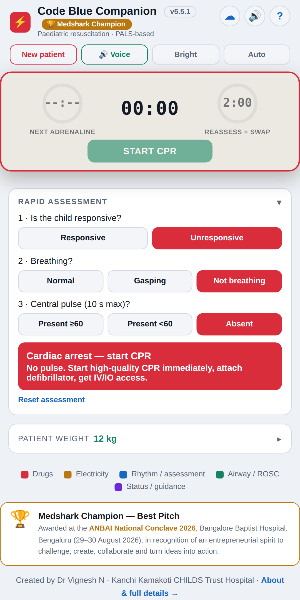
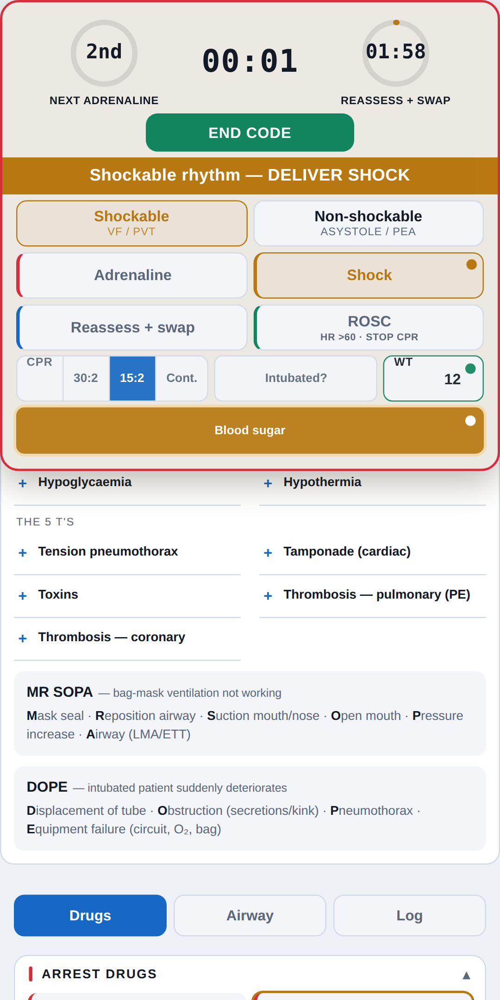

Code Blue Companion
A resuscitation console for pediatric cardiac arrest. Enter a weight, or estimate it from age, and every dose, shock energy and tube size is calculated for you while the timers keep the team on schedule.



What it does
Rapid assessment
Responsive, breathing, pulse: tells the team whether it is an arrest and what to do next.
Weight-calculated doses
Arrest drugs, RSI agents, infusions and equipment sizes, each with a safe cap.
Arrest console and timers
Cues adrenaline, the 2-minute reassessment and shocks as they fall due, with optional voice read-out.
Code log
Every action is timestamped and can be saved for debriefing and quality improvement.
Emergency access
The resuscitation tools open without a login in an emergency.
Works offline
Installs to the home screen and keeps working without a connection.
A decision-support aid for trained clinicians. The treating clinician must verify every dose and remains responsible for all decisions.